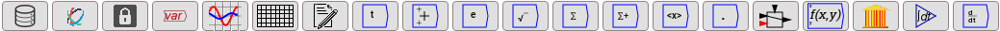
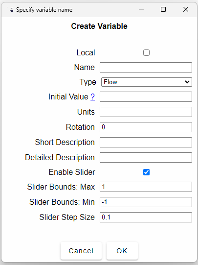
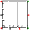
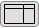
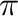
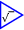
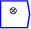
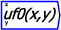
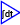

Next: Working with Ravel
Up: Design Canvas
Previous: Wires
Contents

These are the ``nuts and bolts'' of data analysis using Ravel.
There are many icons, and more will be added over time as we extend
Ravel's capabilities.
The critical icons for Ravel are the first four: Import Data
; insert a Ravel
;
attach a selected slice of the Ravel to a Lock; and attach that lock
to a variable for further analysis.
- Import data
-
Opens an import CSV
file dialog, which allows a CSV file to be loaded into a parameter
in Ravel (the default name of the parameter is the name of the file
being imported). See Importing CSV files for
full details. After a data file is imported, the next step is to attach
it to a Ravel.
- Ravel
-
This places a Ravel on the
wiring canvas. The first time this is done in a document, the Ravel
is displayed full-size in Edit mode, and a sample set of dimensions
are displayed. Subsequent Ravels are displayed in icon mode. For full
details on using a Ravel see Ravel GUI.
- Lock
-
Lock widgets are used with
Ravels. A lock keeps a record of the current state of a Ravel: the
items selected on its axes, the effect of calipers in selecting data
ranges, and so on. You can then manipulate the Ravel without changing
the output from the Lock, which can be assigned to a variable for
further use. You can also impose the state of a Lock on its associated
Ravel--this is useful if you wish to fine tune the output from the
Lock. See Lock for full details. The output of a Lock will
change whenever the attached data file changes.
- Variable
-
This is a pop-up menu, which gives access to the form that creates
variables, constants and parameters, and access to the Browser, which
is a window that lists all the variables and parameters in a model,
and enables them to be placed on the wiring canvas.
Variables are entities whose value changes as a function of time and
its relationship with other entities in your model. Click on it and
a variable definition window will appear:
- 
-
See Variables for full details on using this form.
- Plot widget
- 
Add Plots to the canvas.
See Plot widget for full details.
- Sheet widget
- 
Add a Sheet--for the
display of numerical data to the canvas. See Sheet for full
details.
- Notes
- Add textual annotations to a document. See Notes
for full details.
- Time
-
embeds a reference to the simulation
time on the Canvas. This is a Minsky-specific feature.
- Fundamental
- constants. These include e, , 0, 1 and the
percentage operator. See Special constants for full details.
- Binary operations
-
. These execute
the stated binary mathematical operations: operations that require
two (or more) inputs. Where appropriate, each input port to a binary
operator can take multiple wires--so that to add five numbers together,
for example, you can wire 1 input to one port on the Add block, and
the other four to the other port. The same applies to the subtract,
multiply, and divide blocks. See Binary Operations for full
details.
- Unary functions
- 
These are a fairly standard
complement of mathematical functions which take only one input-though
this input can have multiple dimensions. See Unary functions
for details.
- Reduction operations
-
This menu contains
operations such as sum, product, any, all, etc., that reduce a vector
to a scalar, or reduce the rank of a tensor. See Tensor operations
for details.
- Scans
 This menu contains operations
running sum, running product, and the difference operators. See Tensor operations
for details.
This menu contains operations
running sum, running product, and the difference operators. See Tensor operations
for details.
- Miscellaneous tensor operations
- 
Any other tensor function not covered elsewhere.
- Switch
 Add a piecewise-defined
function block to the canvas. See Switch
for details.
Add a piecewise-defined
function block to the canvas. See Switch
for details.
- User defined function
- 
You can
define your own function using an algebraic expression, such as
exp(-x^2y)+.
See User defined functionsfor details.
- Godley Table
-
. This is the fundamental element of Minsky that is not found
(yet) in any other system dynamics program. It is covered in the Minsky
chapter of this manual.
- Integration
- 
. This inserts a variable whose
value depends on the integral of other variables in the system. It
is discussed further in the Minsky section of the manual.
- Derivative Operator
 This operator
symbolically differentiates its input. It is a component of Minsky
which is explained in the Minsky section of this manual.
This operator
symbolically differentiates its input. It is a component of Minsky
which is explained in the Minsky section of this manual.
Next: Working with Ravel
Up: Design Canvas
Previous: Wires
Contents